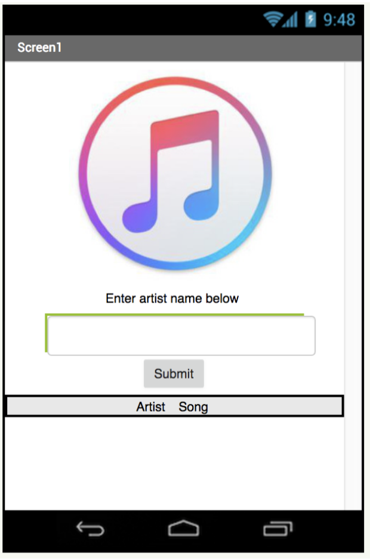
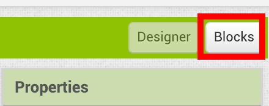
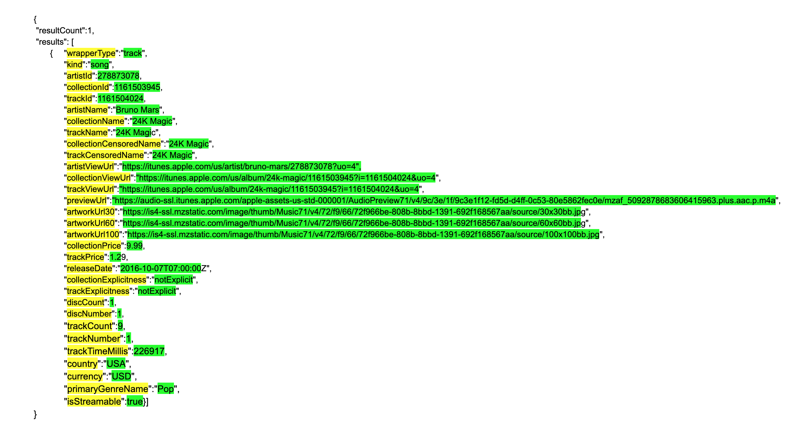
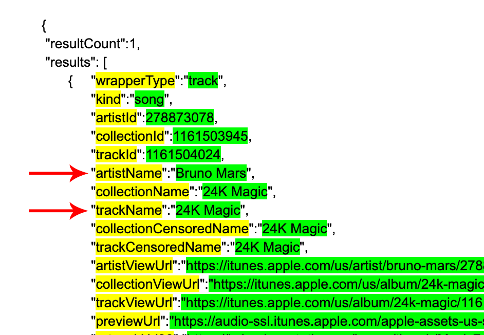
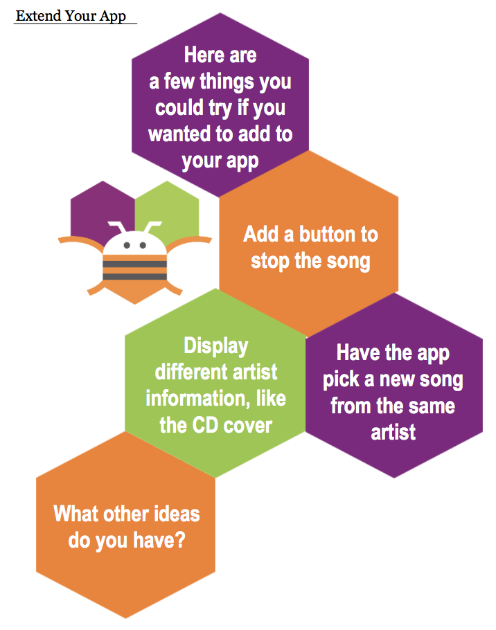
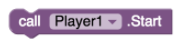
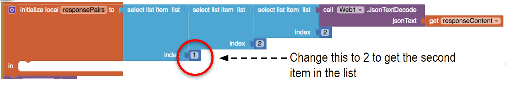
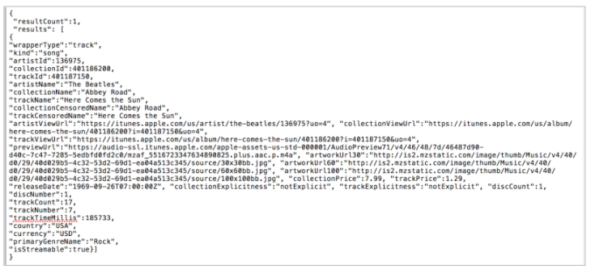
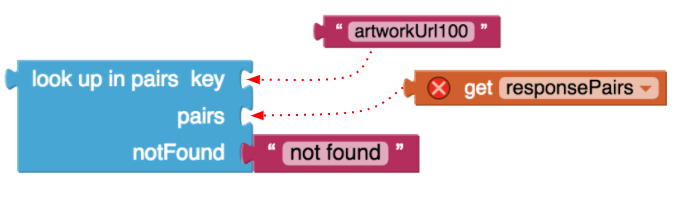

Connect your App
iTunes API
1. Introduction
In this tutorial you will use a Web API to get artist and music information from iTunes to display and play in your own app!
Connect using the companion app so you can test this on your mobile device. If you don't know how to connect, click on the Connect your App tab above..
2. Make the layout
In the Designer, add the necessary components, so your Viewer looks like this:



3. Complete the layout
Name all the components
It’s good practice to name your components descriptively so you can identify which component is which when coding.
Align the Layout
Change the AlignHorizontal property of both Screen1 and ResponseArrangement to "Center: 3". Change ResponseArrangement's Width to "Fill Parent". You can do this by selecting the component in the Components window and changing values in the Properties pane.
A few more adjustments
Change the Picture for IconImage to itunes-icon.png (it should be preloaded in the template)
For ArtistTextBox, change its Width to 75% and its Hint to "Enter artist's name here".
And finally, update the Text properties for your Labels and Button.
Once again, your final layout should look like this:
4. Add a Web component and a Player component
These will show up below the Viewer, since they are hidden components.


5. Start coding
Switch to the Blocks Editor.
6. Make a Procedure to Query iTunes
The first thing you'll do is make a procedure.
A procedure is a way to take a set of blocks and give them a name, so they can be used in multiple places, by “calling” the procedure.
Make a new procedure called "queryiTunes".
Add an input parameter to the procedure.
Set the Web component's URL to the the iTunes API call.

7. Code the QueryButton
Code the QueryButton so when a user clicks the button, it:
- resets the IconImage picture to the iTunes icon image
- calls the queryiTunes procedure to get the artist information based on what is typed in the ArtistTextbox


8. How to Decode the Response from the Web API in App Inventor
When you make a Web API request with the Web1.Get block, it waits until a response is received, and it triggers the Web1.GotText event. Here is an example of a response, which may look confusing:

Once you understand what information is there, you realize it's a pretty powerful tool.
App Inventor provides a block, Web1.JsonTextDecode, that puts this text into a series of lists, so that you can extract the pieces you want by using select list item. In the text above, think of the brackets “{“ and “[“ as the start of a new list. And each comma is a separator between list items.
The large text block above that starts with “wrapperType” is another kind of list organizer, called key/value pairs. For example, "wrapperType" is the key, and "track" is the value.
Here is the same text block from above with items indented and highlighted to make it easier to see what information is there.
The yellow highlighted text are the keys, and the green highlighted text are the values that go with the keys. See, for example, that "artistName" is the key, and "Bruno Mars" is the value.
9. Decode the Web response


10. Extract the URL for the song
The Player component plays music files. The goal is to extract a URL that points to the artist's song from the responsePairs. Once you have that, you'll tell the Player component that is the song you want to play.


11. Set the ArtistLabel and SongLabel
Here is a challenge for you. Can you add code to set ArtistLabel.Text and SongLabel.Text by using the look up in pairs block?
For the keys, you will use the ones designated by the red arrows below.

12. Test it out!
Test your app out using the MIT AI2 Companion! Type in the name of your favorite musical artist, submit, and listen!

Now that you're done, please fill out the Post Tutorial Check-In.
Challenge
Extend your app!
Go to the next page for help with these extensions.
Stop Playing Music
You'll need to add a new Button for stopping the music.
When the user submits their artist information and iTunes returns the information, the music plays.
Look in the Player1 drawer to see what other blocks are available. Can you find a block to stop the music?
Play Alternate Song
Remember, we limited the response from iTunes to 1 song.
So, if you change 1 to 2, chances are you’ll get information for 2 songs by the artist.
From the response, if you want to choose the second song, select the second item in the list.
Think about how you want to play the song. Randomly select the first or the second? Add another button to play the second song?
Displaying Other Artist Information
Recall that the response from iTunes includes many key/value pairs. Look through the text that iTunes returns from the Web API to see what other key/pair values you could extract.
Use look up in pairs in Web1.GotText to pull out other information. For example, you could extract the album/CD cover image using the key "artworkUrl100".
 Consider what information you are extracting. The artwork would have to go in an Image component (set Picture to). If it’s text information, it would go in a Label (set Text to).